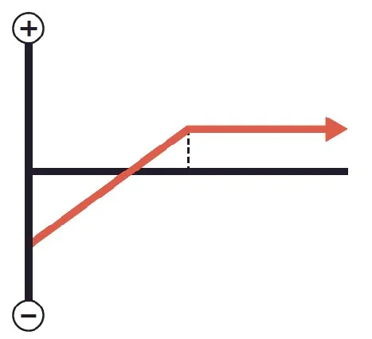

Strategy for Selling Covered Calls
We’ve covered the process but what about the strategy behind covered
calls? In the last chapter, we looked at the absolute basics of that strategy
but an experienced trader knows there’s always going to be more to an
option than meets the eye.
There’s a whole list of considerations that you will eventually want to bear
in mind as you expand your knowledge and develop your own personal
strategy. Every trader has a different attitude toward what works and what
doesn’t. There are plenty of ways to make selling a covered call work but
you’ll probably find yourself preferring one or two strategies.
We’ll take a look now at those considerations in more detail in order to
guide you as you delve into covered calls more deeply:
- The Market Environment: You are no doubt aware that traders
of stocks are happy in a bull market and disgruntled in a bear
market. You may also know that such traders hate a flat market
most of all because very little is happening and there aren’t many
big profits to be made. For you, as a seller of covered calls, the
opposite is true. I highly recommend waiting for the market to
temporarily flatten before embarking on a spate of covered call
sales. That is because you’re only really interested in small
changes to your share prices. If they are skyrocketing, you’re
losing money on your contract. There also isn’t as much danger
of the bottom falling out of the market with your stock prices
plummeting at the same time which would be problematic.
- Your Underlying Stock: There is nothing more important to
your success than choosing the right stocks to invest in. I cannot
stress strongly enough that your success will be heightened if
you pick stocks that move up very slowly. You don’t want stocks
that rise and fall very quickly, especially as a beginner, because
they have a habit of making surprising moves that ruin your strategy. If they drop too far, you stand to lose a lot of money if
you sell. If they rise too high, you lose the money you could
have made if you’d sold them at the higher price. Traders who
deal in risk often enjoy those stocks because they have higher
premiums and a chance for huge profits but that goes against the
idea of selling covered calls. You’re looking for a steady income
that will underpin your riskier strategies elsewhere. By all
means, go for the riskier stock elsewhere in your strategy but
avoid it like the plague for covered calls.
- The Premium: Always remember that the premium is your
guaranteed profit. Whatever else happens, you’re going to walk
away with that cash. When you factor in the cost to list the
option and any commission you will lose to your broker, you’ll
be able to calculate the actual profit you’ll make on a premium.
Set yourself a minimum premium—a number that you consider
to be enough to provide a profit you’ll be happy with on the
assumption that it’s the only profit you make. When you move
ahead on setting the strike price, you’ll likely adjust that base
figure up or down based on what you think the underlying stock
is going to do before the expiration date. Remember that the
premium is only one component of the overall profit you will
make. If you set a strike price that means you lose the same
amount of cash on selling the shares as you made with the
premium, the trade wasn’t worth doing in the first place.
- The Expiration Date: There’s a reason that the premiums on
covered calls get higher when the expiration date is further out.
It’s because, much like the weather forecasts we all deride on a
daily basis, it gets harder and harder to predict what’s going to
happen to a share price the further out you go. Also, bear in mind
that your money is going to be tied up until the expiration date,
so, the premium will increase as a nod to that sacrifice. Most
investors believe that a time span of between a month and three
months works best.

This graph indicates profit and
loss at expiration in respect to the stock value when sold.
As a general rule of thumb, you may wish to consider running that strategy
approximately thirty to forty-five days from expiration to take advantage of
accelerating time decay as expiration approaches. Of course, that depends
on the underlying stock and market conditions such as implied volatility.
You may wish to consider selling the call with a premium that represents at
least 2 percent of the current stock price (premium ÷ stock price).
Ultimately, however, it’s up to you what premium will make running the
strategy worth your while.
Beware of receiving too much time value. If the premium seems
abnormally high, there’s usually a reason for it. Check for news in the
marketplace that may affect the price of the stock. Remember, if something
seems too good to be true, it usually is.
With all of those factors in mind, you are likely starting to see that there is
no single “correct decision” when it comes to selling covered calls. It’s
going to take practice and concentration to figure out which ones work best
for you.
It’s also important to note that your strategy is probably going to change as
you gain experience. The more options you sell, the more you will see new
and more advanced ways to take advantage of the market. For now, I urge
you to be conservative in your approach and accept that selling covered
options is not going to win you your fortune but it is going to help you
increase the seed money you have available to do just that.